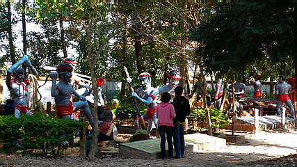

ワットポーチャイシー；その2/ウドンターニー
WatPhoChaiSri：part2/ UdonThani
楽園のようなコンクリ像群を抜けたら、そこはコンクリ地獄世界。
タイ地獄界ではお約束のトゲトゲの木がお出迎え。
先程までの精緻なコンクリ像とはうって変わってぐっとワイルドな仕上がり。
もしかしたら作者が違うのかもしれない。
一方こちらもタイ地獄界のマストアイテム人間鍋。
鳥が突付き、犬が狙う壮絶なる人間鍋。
お鍋がてんこ盛りなのに更に具を追加！
お鍋あふれちゃってますよ〜。
一方こちらは仕込み場。舌は別に調理、ということでしょうか？

調理人、じゃなくて仕置人の方々の表情をさっきの楽園のコンクリ像群と比べられたし。
ザックリ言ってかなり稚拙なのがお分かりいただけるかと。
さらに地獄は続く。
こんなトコでデートすんなよ…

血飛沫全開の解体ショーが延々と。

アタマが動物になってるのは、生前その生き物を殺したからだとか。
↓カエルだけは殺したくない！と思う今日この頃。
タイの地獄全般で思うのだが、責められる亡者は多様なのに責める人達は一様に同じコスチューム。
そして青かったり黒かったり。
ホラ、ね。
ここの方々は水玉模様のフンドシに赤ハチマキ。
忠実に職務を遂行するのは結構だがこんな酷い事したら、君達が地獄行きじゃあないのか？
パチンコまで使っちゃって。
鳥に突付かれる人、檻に入れられる人…
フセイン！？

照りつける強い太陽の下、繰り広げられる地飛沫世界。
規模としてはあんなトコやあんなトコに敵うべくもないが、一人当たりの出血量は相当なものである。
残虐さにおいては中々の地獄であった。
そんな地獄の脇のステージに陣取る若い娘さん達。
地獄の過酷な労働を応援する歌でも歌ってくれるんだろうか。
ステージの前にコイン投入口があったので即投入してみた。
いくらか分からなかったのでとりあえず電動地獄界の通り相場である5バーツ（1バーツは約3.4円）硬貨をチャリ〜ン。
…動かない…
う〜ん、じゃあ、思い切って10バーツ！チャリ〜ン。
…動かない…
あ、わかった！イサーンは物価が安いから1バーツで良いんだ！チャリ〜ン。
…あ、故障してるのか…
俺の16バーツを返せ〜！！（50円チョイですけど）
振り向くと、坊さんが私を指差している。
「ホラ、ああいったアホがいるから小銭が溜まるんじゃ」
トカゲを捕まえるの図。で、何？
奥のほうには作りかけで放置されたコンクリ像がちらほら。
地獄エリアから少し離れたところにはこれまたタイ珍寺界ではお馴染みの美女のなる木があった。
???毎目がネタ詐欺師???の記事によるとワクワクの木というらしい。
説明（語源由来辞典より）
春になると椰子や無花果の実に似た果実がなり、その実から若い娘の足が生え、初夏になると可愛らしい女の子が髪の毛で枝からぶら下がり、熟し切ると「ワクワク」と悲しげな叫び声をあげながら枝から落ちて死んでしまうというものである。
タイ版マンドラゴラ、といったところだろうか。
タイ人に何人か聞いたのだが結構有名な寓話だそうで、「み〜んな知ってますよ〜」と言っていた。
ここのコンクリ像も非常によく出来ていた。
艶めかしい美女がたわわに実る文字通りワクワクする木。
ある意味、世の殿方にとっては桃源郷、いや極楽そのものなのかもしれないっすね。
次の珍寺へＧＯ！
泰国珍寺修行 北へ
珍寺大道場 HOME